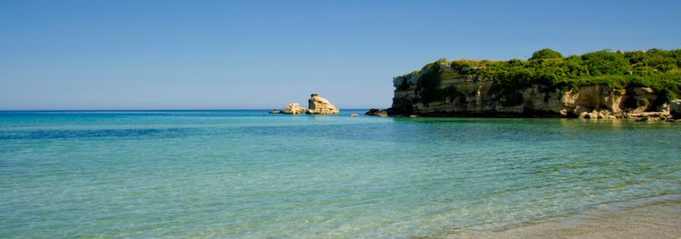
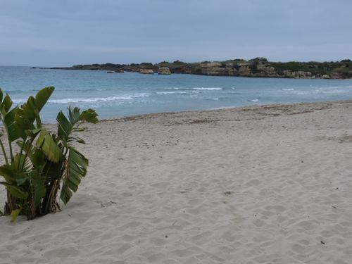
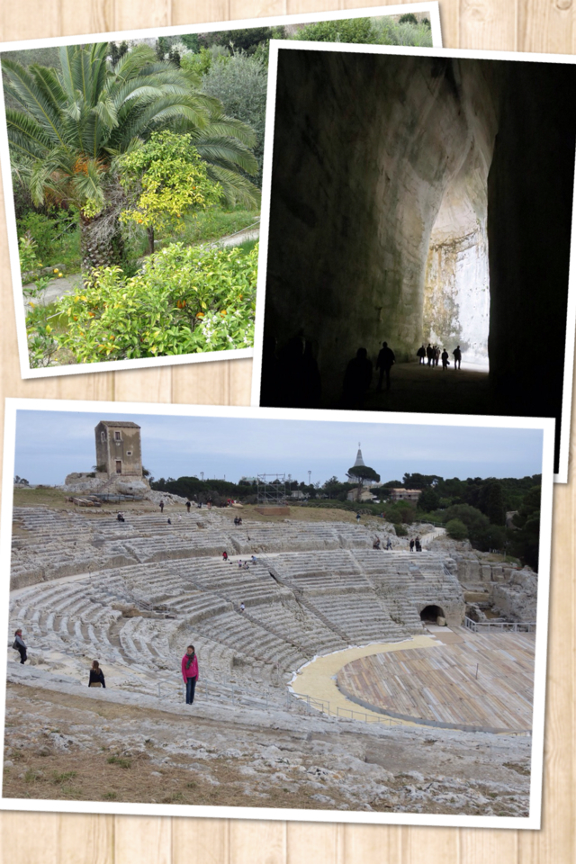
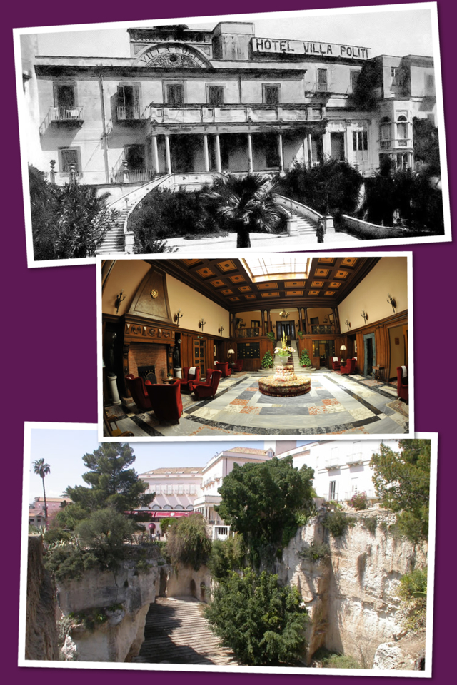
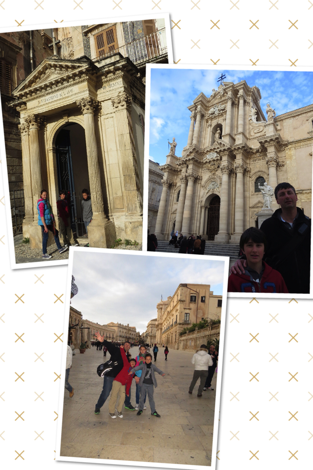

Fontane Bianche courtesy of ilpaesino.it And this is what we actually saw:
The beach of Fontane Bianche, near Syracuse To make it short: after half an hour we were back into our minivan heading towards Syracuse, where we arrived in the early afternoon, still in time to visit the Parco Archeologico, with its fantastic Greek Theater and the mytical Orecchio di Dionisio (Ear of Dionysius).
Parco Archeologico di Siracusa: Orecchio di Dioniso and Greek Theater The Orecchio di Dionisio, named by Italian painter Caravaggio, is a cave with incredible acoustic effects, where, it is said, prisoners where tortured while Greek tyrant Dionysius listened to their screams from an opening 72 feet from the ground. The lush vegetation surrounding the Park is incredible, with lots of palm trees and orange trees that create a background of beautiful colors. In the late afternoon we checked in at the Hotel Villa Politi, an historic palace in the outskirts of Syracuse. Beautifully decorated, you could breath the history of the place (it used to be the residence of Winston Churchill during the Second World War). But what makes it unique is that it sits right above the Latomie dei Cappuccini, a cave used during the ancient times to extract the stone for the construction of many buildings and statues in the area. This was later used as a prison for the Athenians soldiers, left here to die.
The villa in its old times, the interiors and the cave After checking-in and relaxing in our gorgeous bedrooms for a few minutes, we left and went visiting Syracuse (or Siracusa...). The highlight of this city is Ortigia, an island where there are many attractions, including the beautiful Baroque piazza with its Duomo.
Small chapel on the streets of Ortigia, the Duomo and Piazza del Duomo It was beautiful to walk around admiring the buildings, visiting the churches and enjoying a gelato. It was the day after Easter, and while I was expecting to find most of the stores closed (Italians celebrate also the following Monday, known as Pasquetta), surprisingly enough they were all open, including the museums (half of our party visited the Museum of Archimede). And then our day was almost over: we had dinner in Ortigia and later headed back to our hotel, happy for some time well spent.